图解 MoE 模型
原文：https://newsletter.maartengrootendorst.com/p/a-visual-guide-to-mixture-of-experts
在查看最新发布的LLMs时，你可能会在标题中看到“MoE”这个词。那么，这个“MoE”到底代表什么？为什么现在有这么多 LLM 都在使用它呢？
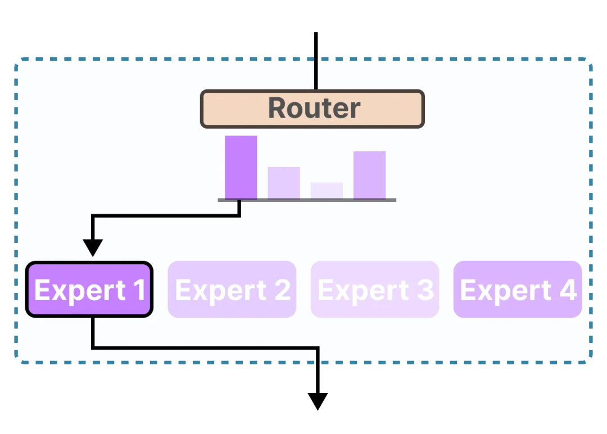
下面我们将通过 50 多个图示来详细探讨这一重要组件：专家混合模型（MoE）！本指南将围绕 MoE 的两个主要组成部分——专家（Experts）和路由器（Router）——在典型的基于 LLM 架构中的应用展开讨论。
什么是专家混合模型？
专家混合模型（MoE）是一种通过使用多个不同的子模型（或“专家”）来提升 LLM 质量的技术。
MoE 的两个主要组成部分为：
专家（Experts）：每个前馈神经网络层（FFNN）现在都有一组可以选择的“专家”。这些“专家”通常本身也是前馈神经网络（FFNN）。
路由器或门控网络（Router 或 Gate Network）：决定哪些 token 被发送到哪些专家。
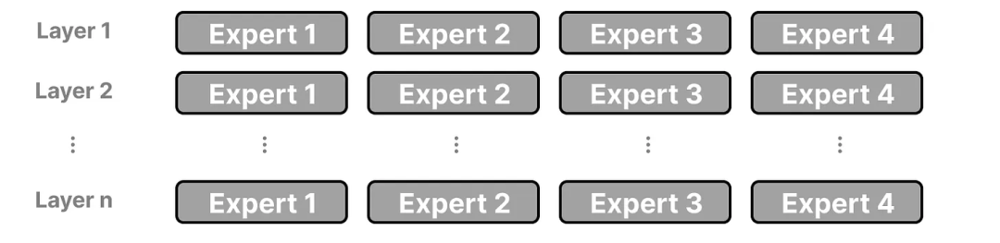
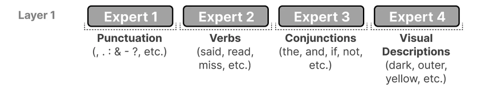
在具有 MoE 的 LLM 的每一层中，我们可以发现一些（相对专业化的）专家：请注意，这些“专家”并不像人类领域中的“心理学”或“生物学”专家那样在特定学科上表现出高度专业化。实际上，它们更多是从词汇层次上学习句法信息：更具体地说，它们擅长于在特定上下文中处理特定的 tokens。
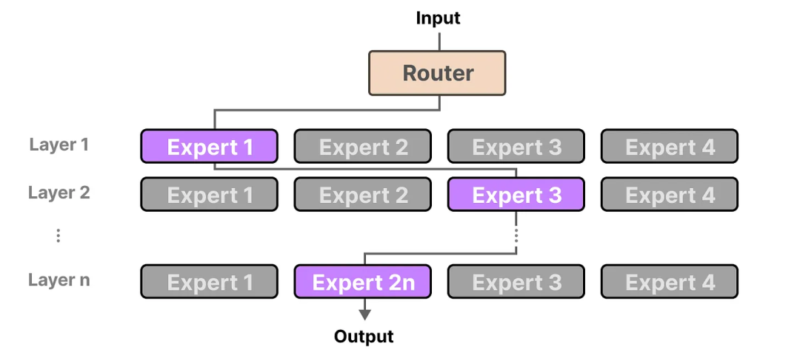
路由器（或门控网络）负责为每个输入选择最合适的专家：每个专家并不是一个完整的 LLM，而是 LLM 架构中一个子模型部分。
专家
要理解专家的含义及其工作方式，首先需要了解 MoE 用来替代的内容：密集层（Dense Layers）。
密集层（Dense Layers）
专家混合模型（MoE）最初是从大型语言模型（LLMs）中相对基础的功能开始的，即前馈神经网络（Feedforward Neural Network, FFNN）。
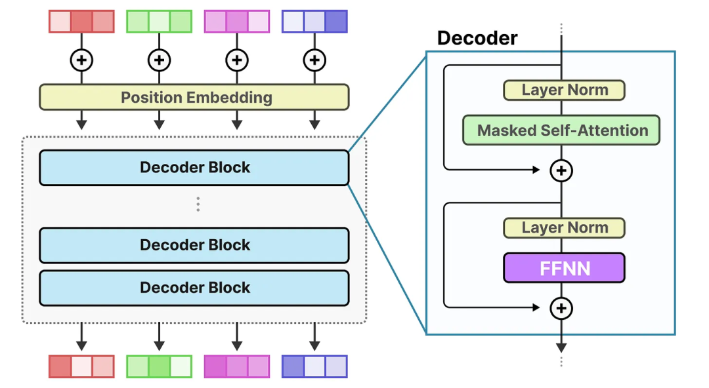
请记住，在标准的Decode-only Transformer 架构中，FFNN 通常应用于层归一化（Layer Normalization）之后：FFNN 允许模型利用注意力机制生成的上下文信息，并进一步转化这些信息，从而捕捉数据中更复杂的关系。
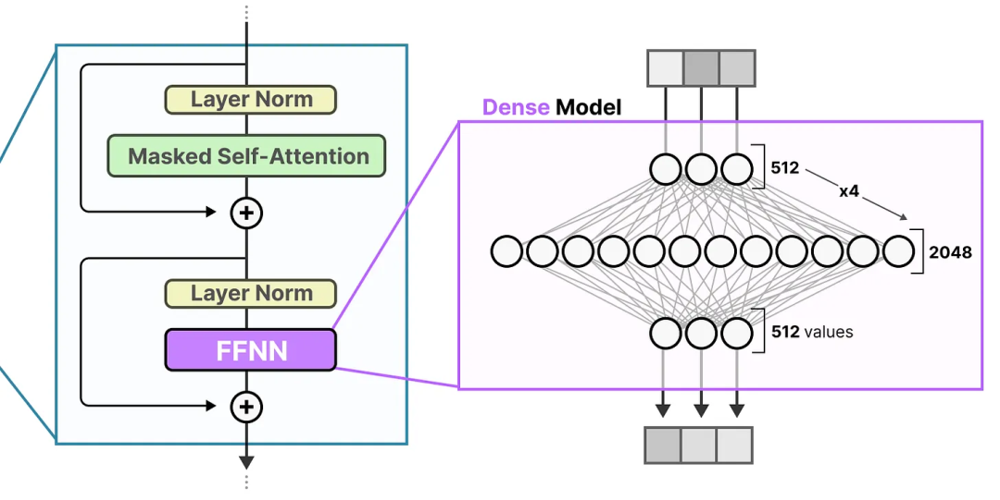
然而，FFNN 的规模增长速度很快。为了学习这些复杂的关系，它通常需要对接收到的输入进行扩展：
稀疏层（Sparse Layers）
在传统的 Transformer 中，FFNN 被称为密集模型（Dense Model），因为它的所有参数（包括权重和偏置项）都会被激活。所有参数都被用于计算输出，没有任何部分被遗弃。
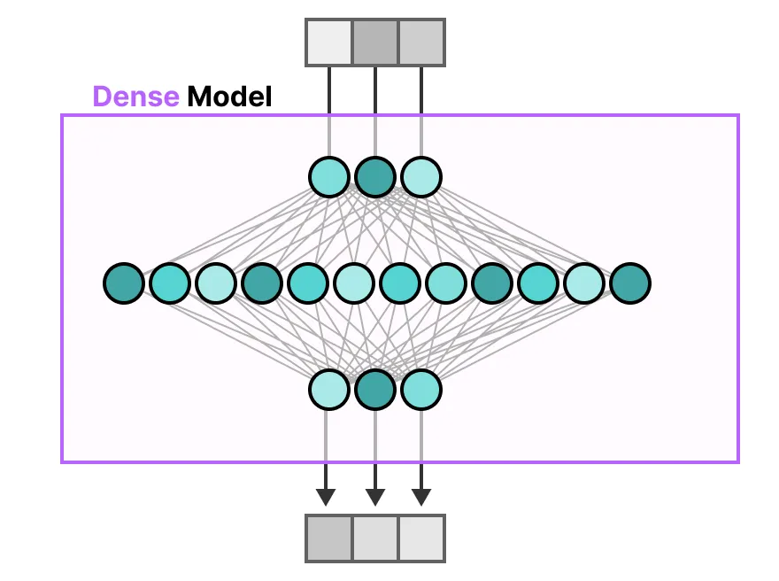
如果我们仔细观察密集模型，可以发现输入在某种程度上激活了所有参数：相比之下，稀疏模型（Sparse Models）仅激活总参数中的一部分，这与专家混合模型（MoE）密切相关。
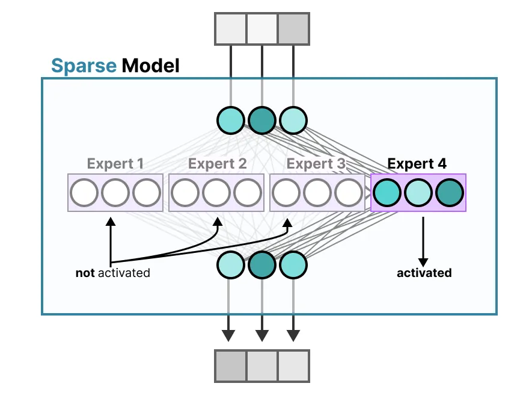
为了说明这一点，我们可以将密集模型分解为多个部分（称为专家），并重新训练它。随后，在某一时刻只激活部分专家：其核心思想是，每个专家在训练过程中学习不同的信息。而在推理时，仅使用与当前任务最相关的特定专家。
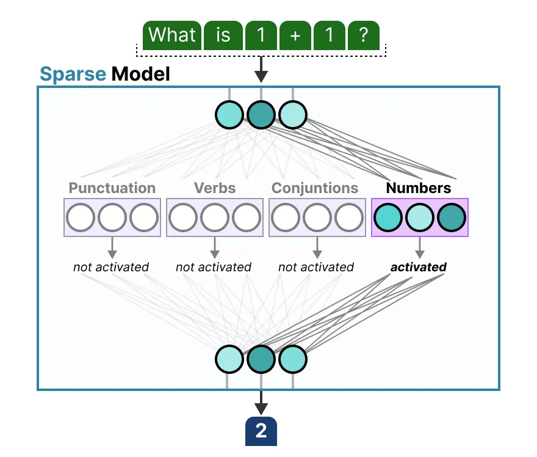
当面对一个问题时，我们可以选择最适合该任务的专家：
专家学习了什么？
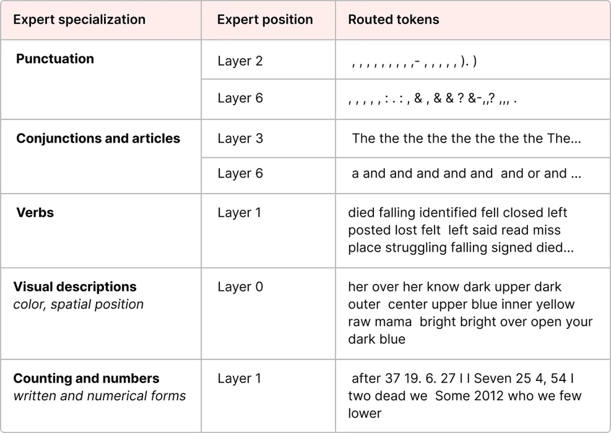
正如我们之前所见，专家学习的信息比整个领域的信息更加细粒度。因此，有时将它们称为“专家”可能会产生误导。然而，在解码器模型中的专家似乎并没有表现出相同类型的专业化。这并不意味着所有专家都是等同的。
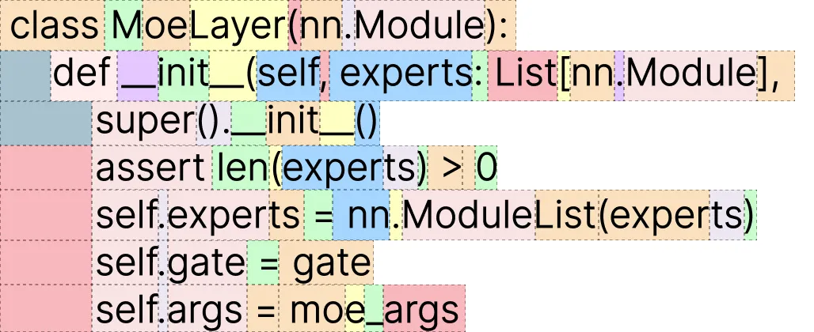
在 Mixtral 8x7B 论文中，每个 token 都被其选择的第一个专家进行了着色，这是一个很好的例子。
https://arxiv.org/pdf/2401.04088 这一可视化结果也表明，专家往往更关注句法，而不是某个特定领域的内容。 因此，尽管解码器中的专家似乎没有特定的专业化，但它们确实在某些类型的 tokens 上表现得更加一致。
专家的架构
Although it’s nice to visualize experts as a hidden layer of a dense model cut in pieces, they are often whole FFNNs themselves:
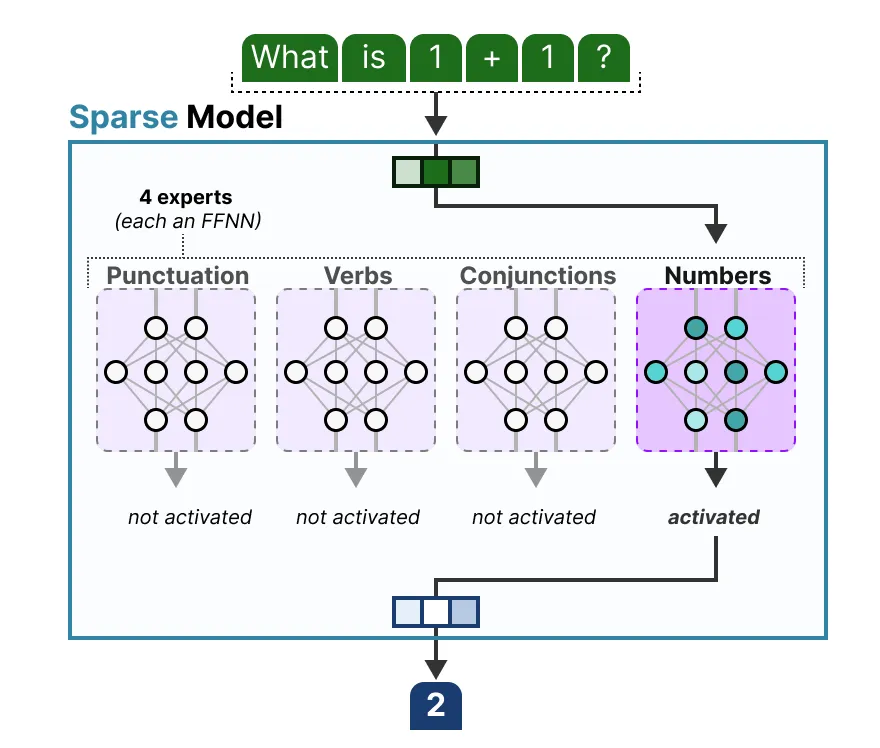
Since most LLMs have several decoder blocks, a given text will pass through multiple experts before the text is generated:
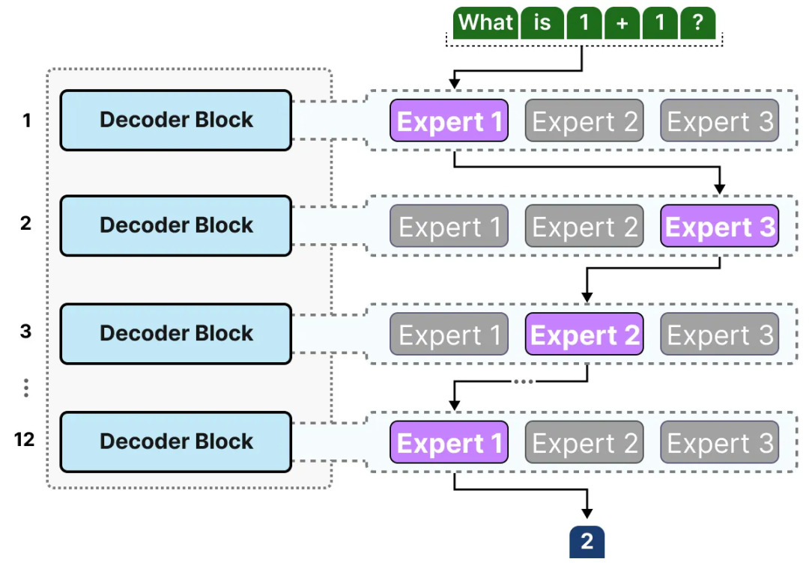
The chosen experts likely differ between tokens which results in different “paths” being taken:
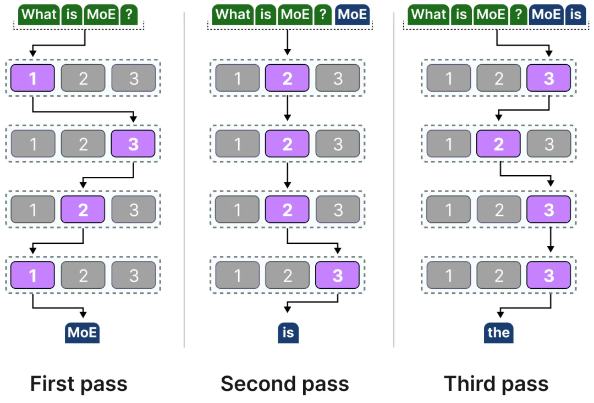
If we update our visualization of the decoder block, it would now contain more FFNNs (one for each expert) instead:
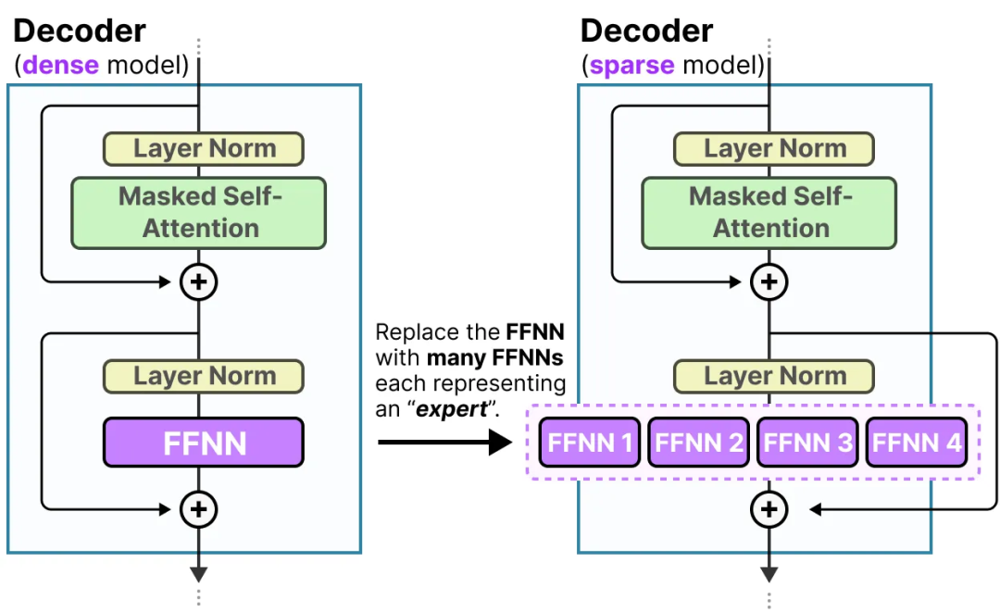
虽然将专家可视化为密集模型的隐藏层被切分成若干部分很有帮助，但实际上它们通常本身就是完整的 FFNN。由于大多数 LLM 具有多个解码器块（Decoder Blocks），因此给定的文本会在生成之前通过多个专家：不同 tokens 被选中的专家可能各不相同，这导致了不同的“路径”被选择：如果我们更新解码器块的可视化，现在它将包含多个 FFNN（每个 FFNN 对应一个“专家”）：解码器块现在包含多个可以在推理时使用的 FFNN（即“专家”）。
路由机制（The Routing Mechanism）
现在我们有了一组专家，模型如何知道该使用哪些专家呢？
在专家之前会加入一个路由器（也称为门控网络），它会被训练来选择每个 token 应选择的专家。
路由器（The Router）
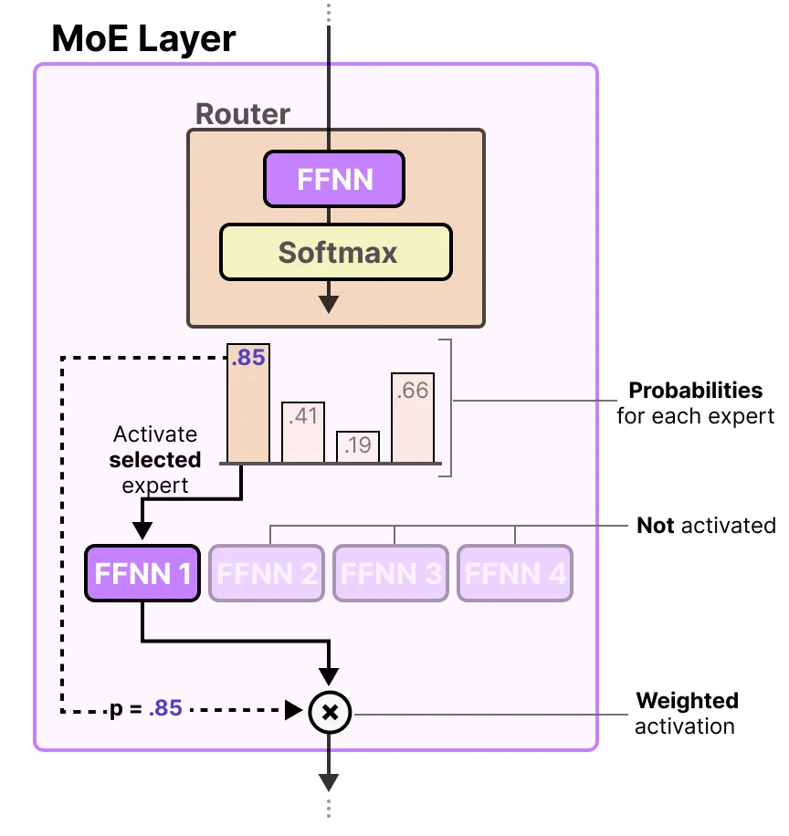
路由器（或门控网络）本身也是一个 FFNN，它根据特定的输入选择专家。路由器会输出概率值，并利用这些概率来选择最匹配的专家：专家层返回被选定专家的输出，并乘以门控值（选择概率）。
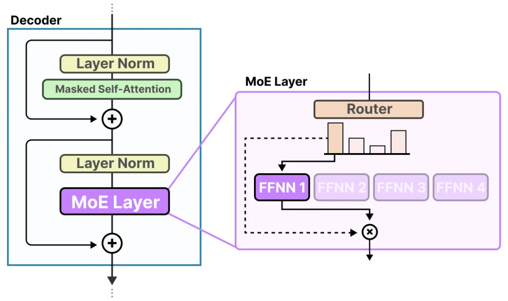
路由器和专家（其中仅选择少部分）共同构成了 MoE 层：给定的 MoE 层有两种类型：稀疏专家混合模型（Sparse Mixture of Experts）和密集专家混合模型（Dense Mixture of Experts）。
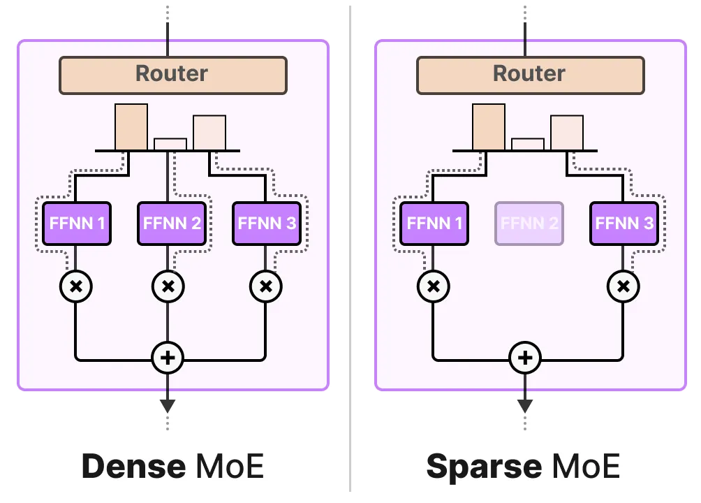
两者都使用路由器来选择专家，但稀疏 MoE 只选择少数几个专家，而密集 MoE 则选择全部专家，但可能会以不同的分布进行选择。例如，面对一组 tokens，MoE 会将这些 tokens 分布到所有专家，而稀疏 MoE 则只会选择少数几个专家。
在目前的 LLM 中，当你看到“MoE”时，它通常指的是稀疏 MoE，因为稀疏 MoE 允许使用部分专家，从而减少计算开销，这对于 LLM 来说是一个重要的特性。
专家的选择
门控网络可以说是 MoE 中最重要的组件，因为它不仅决定了推理时要选择哪些专家，还决定了训练时的选择。
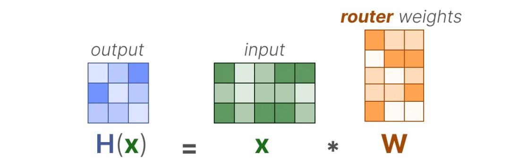
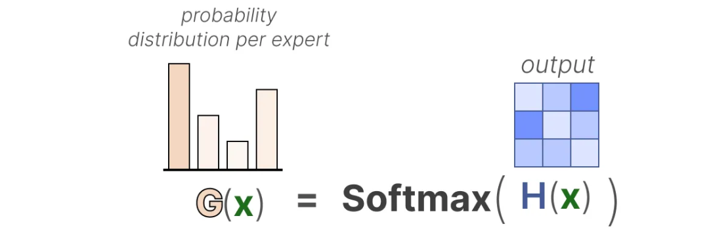
最基本的形式是，我们将输入（x）与路由器的权重矩阵（W）相乘：然后，我们对输出应用 SoftMax 操作，为每个专家创建一个概率分布 G(x)：路由器利用这个概率分布来为给定的输入选择最匹配的专家。
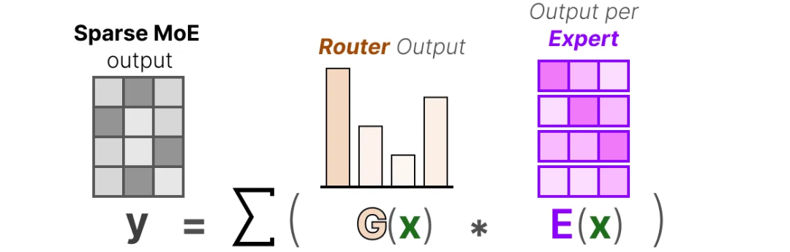
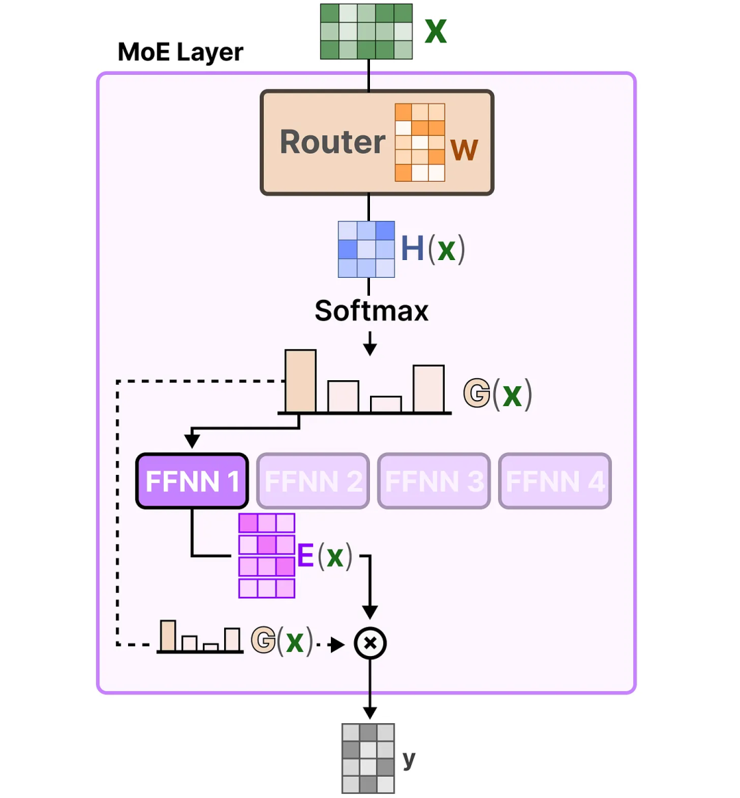
最后，我们将每个路由器的输出与各自选择的专家输出相乘，并将结果相加：让我们将所有内容整合起来，探索输入如何在路由器和专家中流动：
路由的复杂性
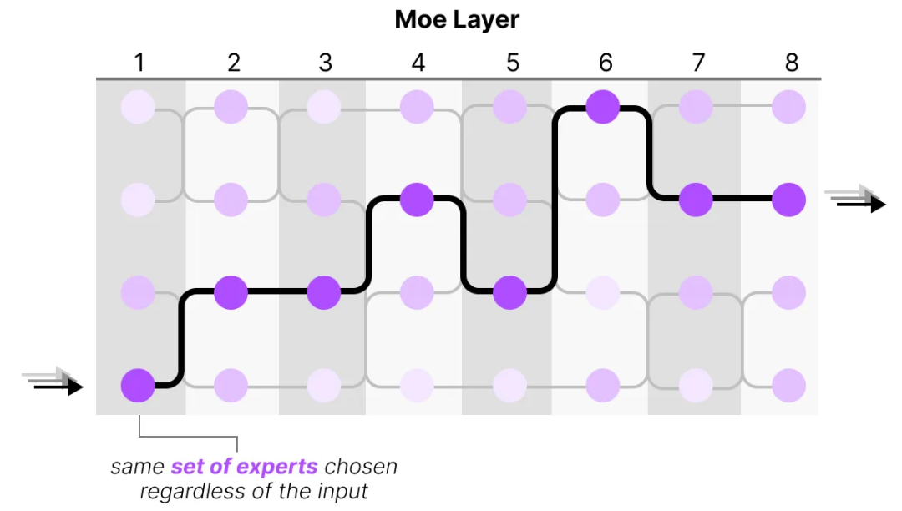
然而，这个简单的功能往往会导致路由器总是选择相同的专家，因为某些专家可能比其他专家学习得更快：这不仅会导致专家选择的不均匀分布，还会导致某些专家几乎没有被训练过。这会在训练和推理过程中引发问题。
因此，我们希望在训练和推理期间，各个专家的使用具有同等的重要性，这就是所谓的负载平衡。某种程度上，这是为了防止模型在同一组专家上过拟合。
负载平衡与优化
为了平衡专家的重要性，我们需要重点关注路由器，因为它是决定某一时刻选择哪些专家的主要组件。
KeepTopK
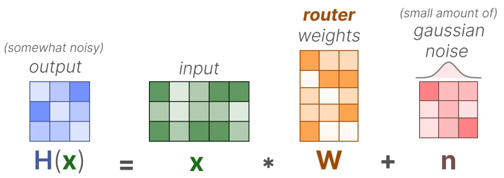
一种对路由器进行负载平衡的方法是使用一个简单的扩展策略，称为 KeepTopK。通过引入可训练的（高斯）噪声，我们可以防止总是选择相同的专家：
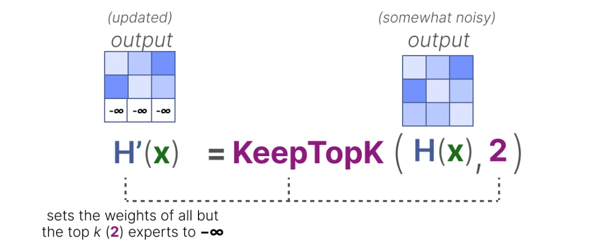
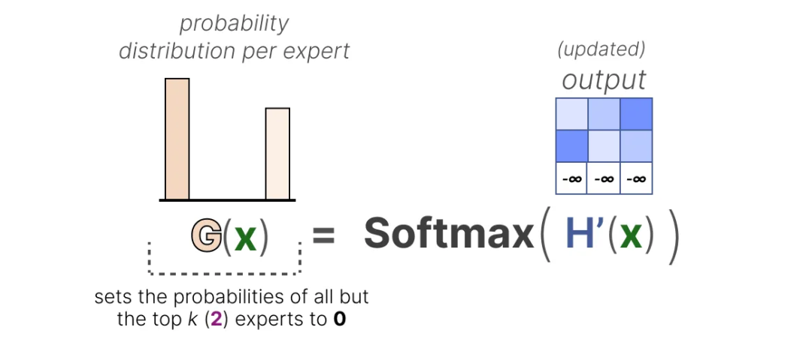
https://arxiv.org/pdf/1701.06538 然后，除希望激活的前 k 个专家（例如 2 个）以外的所有专家权重都将被设为 -∞：将这些权重设为 -∞ 时，SoftMax 操作后的输出概率将变为 0：尽管存在许多有前景的替代方案，许多 LLM 仍然使用 KeepTopK 策略。需要注意的是，KeepTopK 也可以不使用额外的噪声。
Token 选择策略
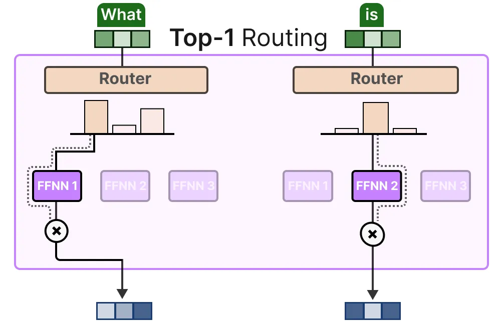
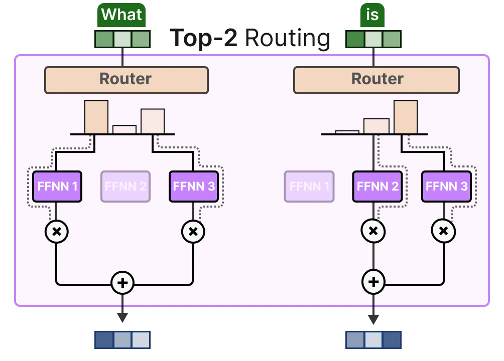
KeepTopK策略会将每个token路由到若干选定的专家。这种方法被称为 Token 选择策略（Token Choice），它允许一个给定的 token 被路由到一个专家（top-1 路由）：或者被路由到多个专家（top-k 路由）：这种策略的主要优点在于，它可以对各个专家的贡献进行加权，并将其整合起来。
辅助损失（Auxiliary Loss）
为了在训练期间实现专家的均匀分布，网络的常规损失中加入了辅助损失（也称为负载平衡损失）。
辅助损失增加了一个约束，强制专家在训练过程中具有相同的重要性。
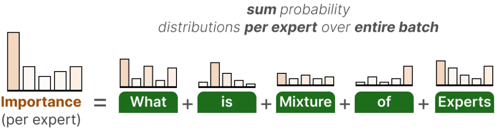
辅助损失的第一个组成部分是对整个批次中每个专家的路由值进行求和：这为我们提供了每个专家的重要性得分，即在不考虑输入的情况下，给定专家被选中的概率。
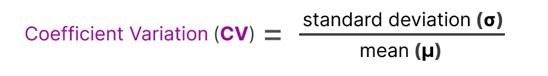
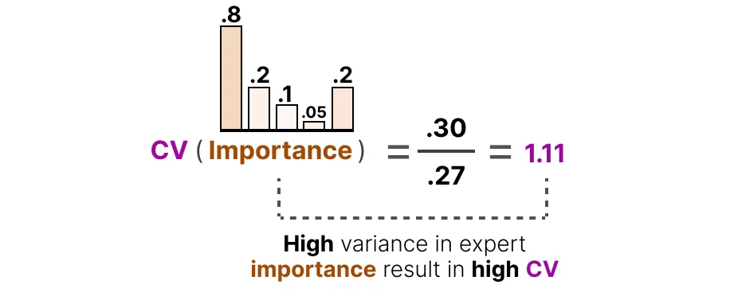
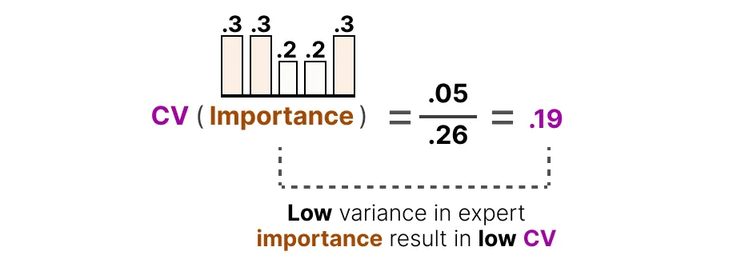
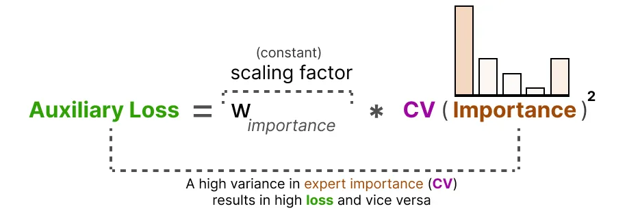
我们可以使用这些重要性得分计算变异系数（Coefficient of Variation, CV），它表示各个专家的重要性得分之间的差异程度。例如，如果重要性得分之间的差异较大，那么 CV 值就会较高：相反，如果所有专家的得分都相似，则 CV 值较低（这是我们期望的情况）：通过使用这个 CV 得分，我们可以在训练过程中更新辅助损失，使其尽可能降低 CV 得分（从而使每个专家具有相同的重要性）：最后，辅助损失将作为一个独立的损失项，参与训练优化。
专家容量（Expert Capacity）
Imbalance is not just found in the experts that were chosen but also in the distributions of tokens that are sent to the expert.(专家的不平衡不仅体现在被选中的专家上，还体现在分配给这些专家的 token 分布上。)
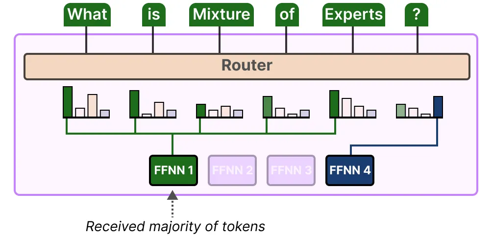
例如，如果输入token被不成比例地分配到某些专家上，而不是平均分配，这可能导致某些专家的训练不足：这里不仅要考虑使用了哪些专家，还需要关注这些专家被使用的频率。
Here, it is not just about which experts are used but how much they are used. A solution to this problem is to limit the amount of tokens a given expert can handle, namely Expert Capacity4. By the time an expert has reached capacity, the resulting tokens will be sent to the next expert:
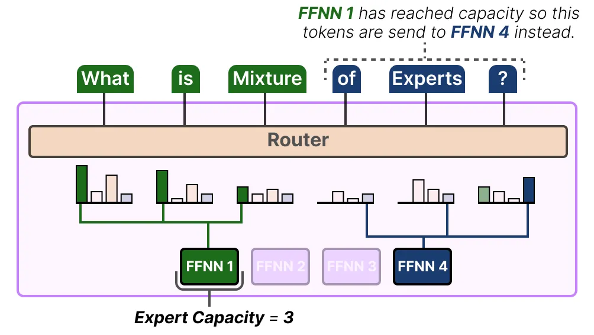
If both experts have reached their capacity, the token will not be processed by any expert but instead sent to the next layer. This is referred to as token overflow.
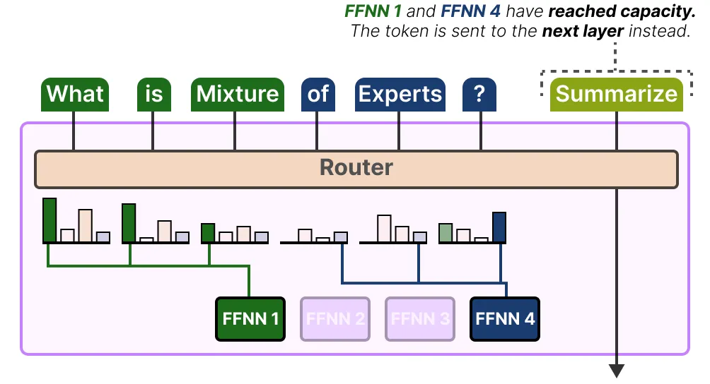
解决这个问题的方法是限制每个专家能够处理的 token 数量，即专家容量（Expert Capacity）。当一个专家达到其容量时，多余的 token 将被分配到下一个专家：如果两个专家都达到了其容量，token 将不会被任何专家处理，而是直接传递到下一层。这种情况被称为 token 溢出（token overflow）。
使用 Switch Transformer 简化 MoE
第一个解决 MoE 训练不稳定性问题（如负载平衡）的基于 Transformer 的 MoE 模型是 Switch Transformer。它通过简化架构和训练过程，提高了训练稳定性。
切换层（Switching Layer）
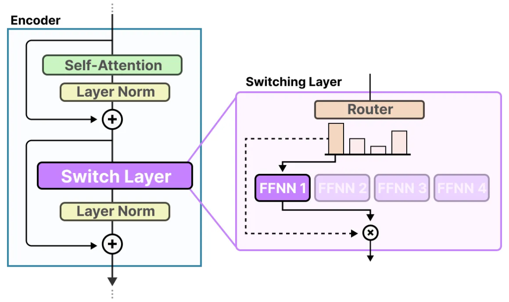
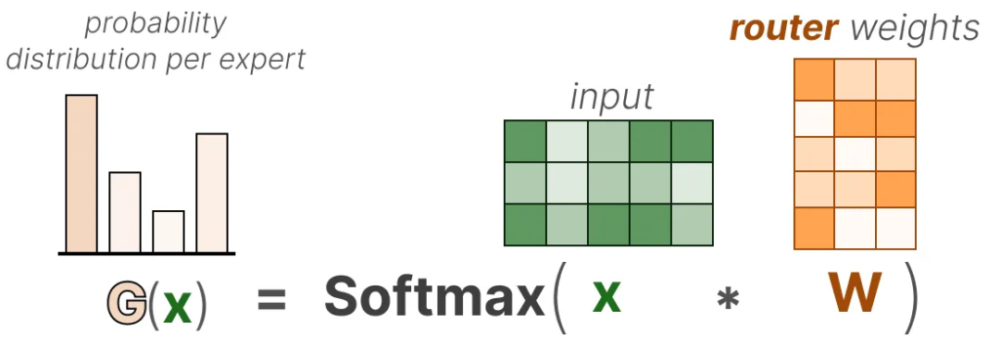
Switch Transformer 是一个 T5 模型（编码器-解码器结构），它将传统的 FFNN 层替换为切换层（Switching Layer）。切换层是一个稀疏的 MoE 层，它为每个 token 选择单个专家（top-1 路由）。路由器在选择专家时并没有使用特殊的方法，只是对输入与专家权重相乘的结果取 softmax（与之前的方法相同）。这种架构（top-1 路由）假设每个 token 只需要一个专家来学习如何进行路由。这与我们之前讨论的 top-k 路由（将 token 分配给多个专家）有所不同。
容量因子（Capacity Factor）
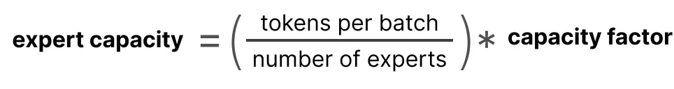
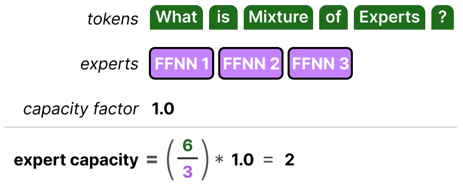
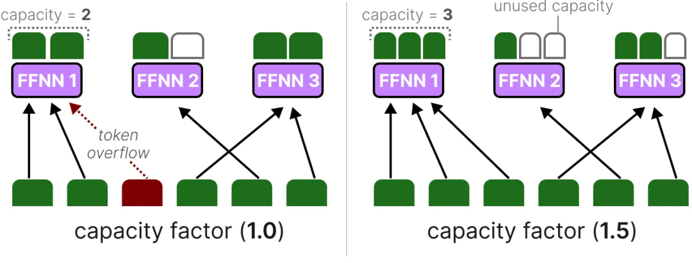
容量因子是一个重要参数，它决定了每个专家可以处理的 token 数量。Switch Transformer 通过引入直接影响专家容量的容量因子扩展了这一概念。专家容量的组成部分非常简单：如果我们增加容量因子，则每个专家能够处理更多的 token。然而，如果容量因子过大，就会浪费计算资源。相反，如果容量因子过小，模型性能会因为 token 溢出而下降。
辅助损失（Auxiliary Loss）
为了进一步防止 token 被丢弃，Switch Transformer 引入了简化版的辅助损失。
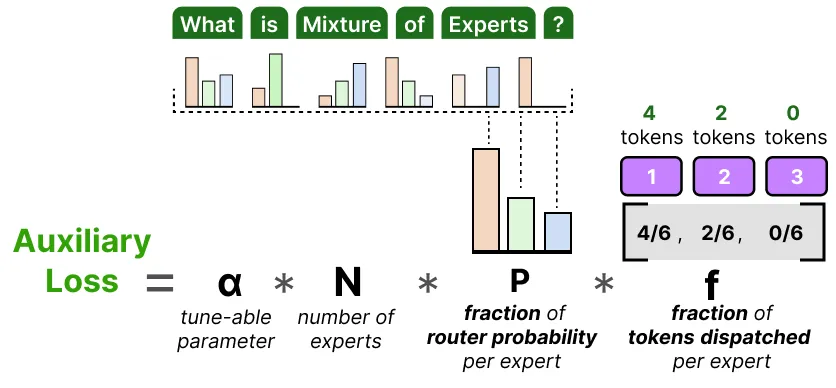
在简化版的辅助损失中，不再计算变异系数，而是将分配的 token 数量与每个专家的路由概率进行加权比较：由于目标是希望将 token 在 N 个专家中均匀分配，因此我们希望向量 P 和 f 的值为 1/N。
α 是一个超参数，用于在训练过程中微调此损失的重要性。值过高会影响主要损失函数，而值过低则无法有效进行负载平衡。
视觉模型中的专家混合模型
MoE 并不仅限于语言模型。视觉模型（如 ViT）使用 Transformer 架构，因此也有潜力使用 MoE。
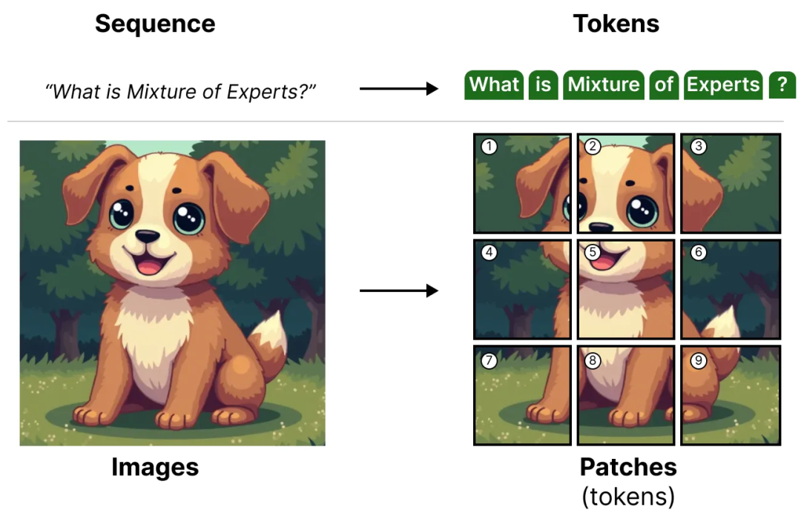
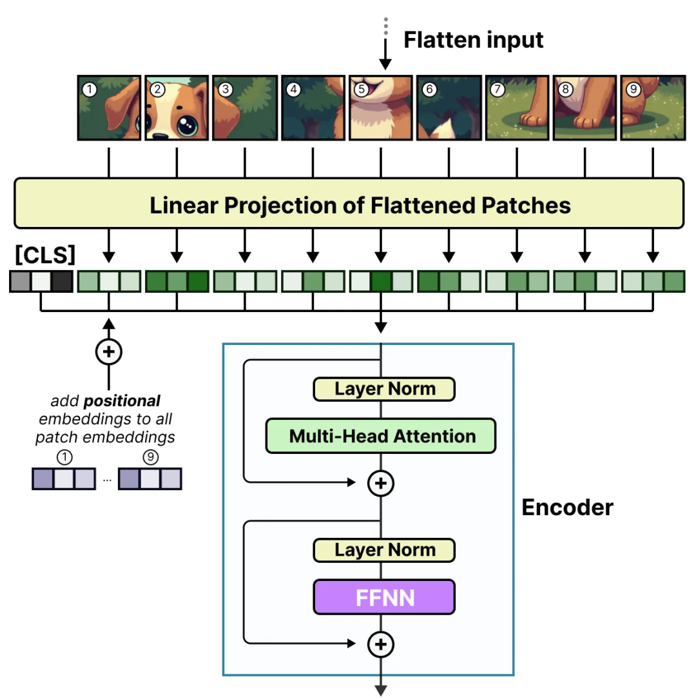
快速回顾一下，ViT（Vision Transformer）是一种将图像分割为若干块，并将其作为 tokens 处理的架构。这些图像块（或 tokens）会被投射到嵌入向量（加上额外的位置嵌入向量）中，然后输入到常规编码器中：当这些图像块进入编码器时，它们会像 tokens 一样被处理，这使得这种架构非常适合 MoE。
Vision-MoE
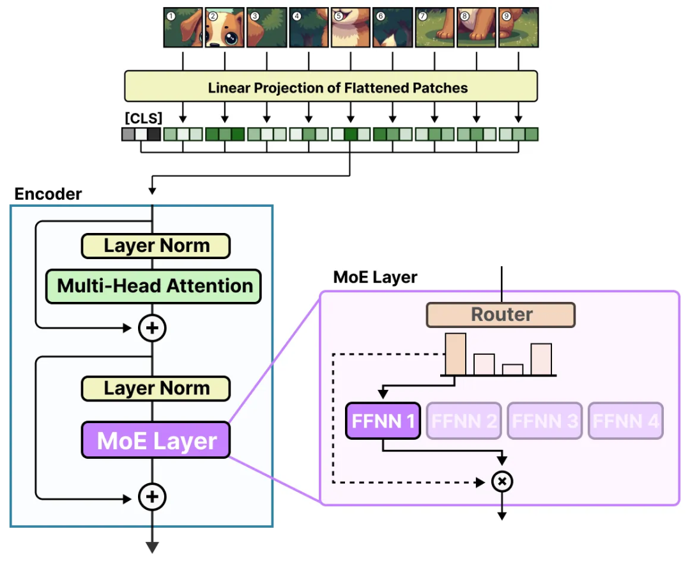
Vision-MoE（V-MoE）是图像模型中第一个实现 MoE 的例子之一。它将 ViT 中的密集 FFNN 层替换为稀疏 MoE。这种改进使得 ViT 模型（通常比语言模型小）能够通过增加专家的数量来大幅扩展。
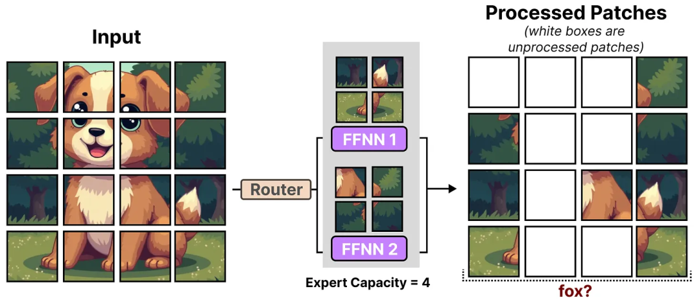
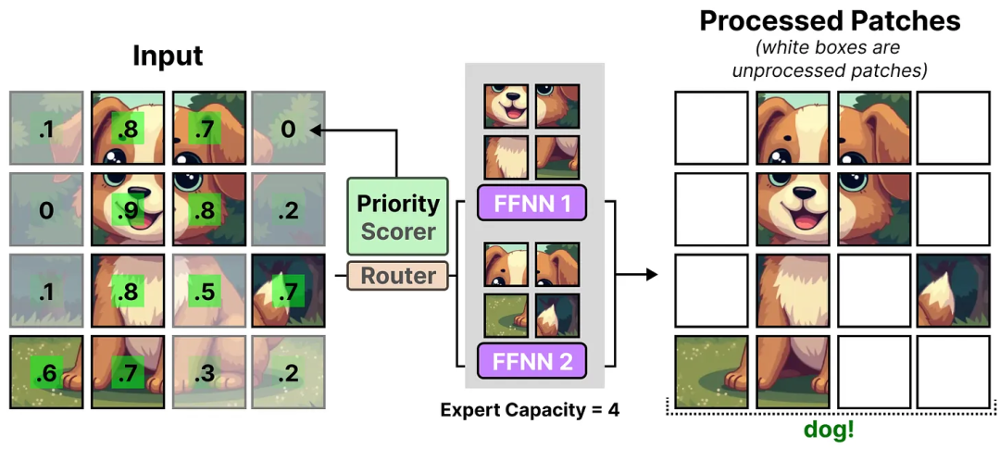
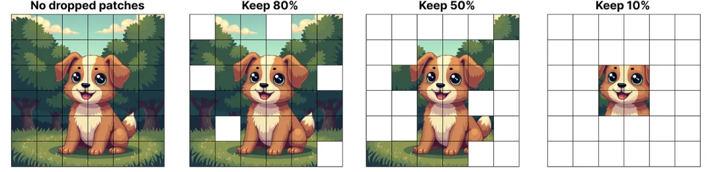
为了降低硬件限制，每个专家都设置了一个较小的预定义容量，因为图像通常包含大量的图像块。然而，低容量往往会导致图像块被丢弃（类似于 token 溢出）。为了保持容量较低，网络会为每个图像块分配重要性得分，并优先处理这些得分较高的图像块，从而避免溢出图像块的丢失。这种方法被称为批量优先路由（Batch Priority Routing）。因此，即使 token 数量减少，我们仍然能够看到重要的图像块被成功路由。优先路由使得在处理较少的图像块时，仍能聚焦于最重要的图像块。
从稀疏 MoE 到软 MoE
在 V-MoE 中，优先评分机制能够区分出重要和不重要的图像块。然而，图像块被分配给每个专家后，未被处理的图像块中的信息就会丢失。
软 MoE（Soft-MoE）旨在通过混合图像块，从离散的图像块（token）分配转变为软分配。
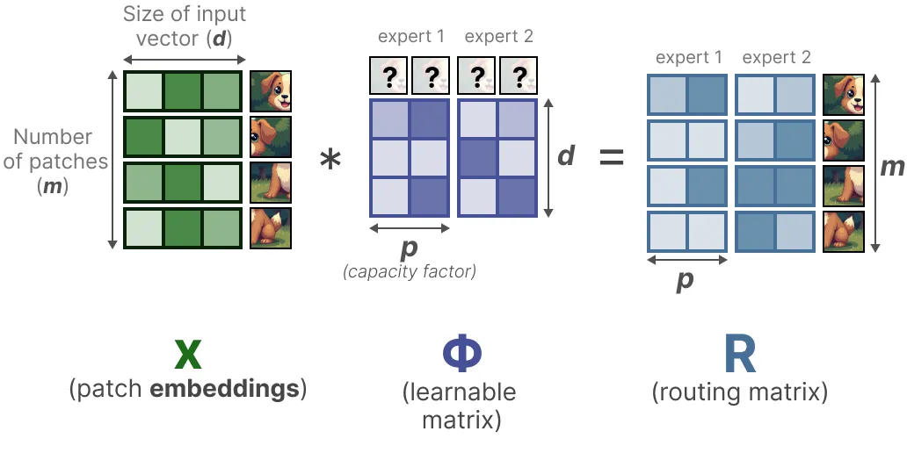
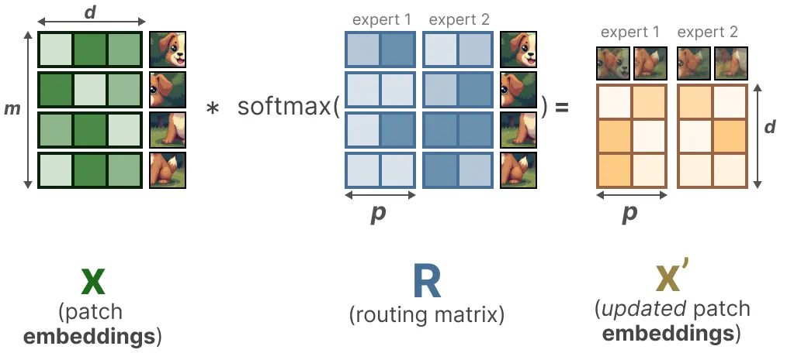
第一步，我们将输入 x（图像块嵌入）与一个可学习矩阵 Φ 相乘。这将生成路由信息，它告诉我们某个 token 与某个专家的相关程度。然后对路由信息矩阵进行 softmax 操作（在列上），从而更新每个图像块的嵌入向量。更新后的图像块嵌入本质上是所有图像块嵌入的加权平均。从视觉上看，这就像是所有图像块被混合。这些组合后的图像块被发送到每个专家。生成输出后，它们再次与路由矩阵相乘。路由矩阵在 token 层面影响输入，并在专家层面影响输出。
因此，我们获得了“软”图像块/token，这些 token 被处理，而不是离散输入。
Mixtral 8x7B 的激活与稀疏参数对比
MoE 的一个重要特点是其计算需求。由于在同一时刻只会使用部分专家，我们可以拥有比实际使用的更多的参数。
尽管给定的 MoE 拥有更多的参数（稀疏参数），但由于我们在推理时只使用部分专家（活跃参数），因此激活的参数较少。换句话说，我们仍然需要将整个模型（包括所有专家）加载到设备中（稀疏参数），但在实际运行推理时，我们只需要使用部分参数（活跃参数）。MoE 模型需要更多的显存来加载所有专家，但推理时运行速度更快。
让我们以 Mixtral 8x7B 为例来探讨稀疏参数与活跃参数的数量差异。在此例中，我们可以看到每个专家的参数量为 5.6B，而不是 7B（尽管一共有 8 个专家）。我们需要加载 8x5.6B（46.7B）的参数（加上所有共享参数），但推理时只需要使用 2x5.6B（12.8B）的参数。
结论
以上就是我们对专家混合模型（MoE）的探索之旅！希望这篇文章能帮助你更好地理解这一有趣技术的潜力。如今几乎所有的模型架构中都有 MoE 变体，这也预示着它可能会长期存在下去。